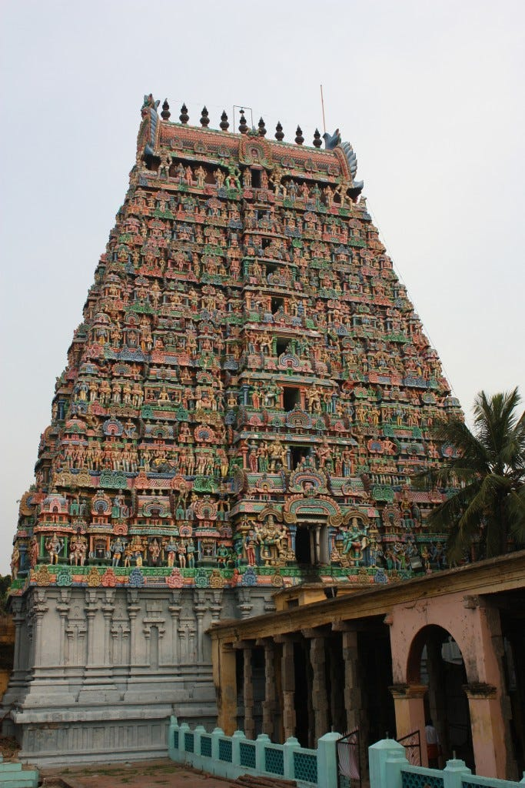
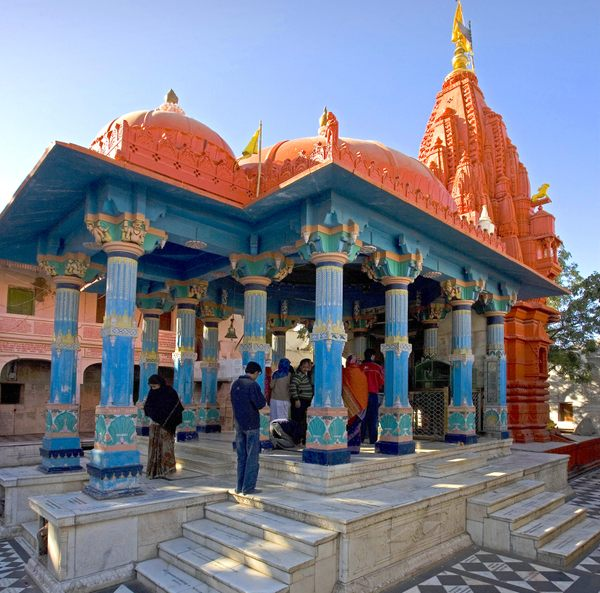

Brahma Temple


Brahma Temple
Brahma Temple, Pushkar (also known as Jagatpita Brahma Mandir) is a Hindu temple situated at Pushkar in the Indian state of Rajasthan, close to the sacred Pushkar Lake to which its legend has an indelible link.
The temple is one of very few existing temples dedicated to the Hindu creator-god Brahma in India and remains the most prominent among them.The temple structure dates to the 14th century CE, with later partial rebuilding. The temple is made of marble and stone slabs. It has a distinct red pinnacle (shikhara) and a hamsa bird motif. The temple sanctum sanctorum holds the image of four-headed Brahma and his consort Gayatri (goddess of vedas). The temple is governed by the Sanyasi (ascetic) sect priesthood.[2] On Kartik Poornima, a festival dedicated to Brahma is held when large numbers of pilgrims visit the temple, after bathing in the sacred lake.
History
Pushkar is said to have over 500 temples (80 are large, the remainder small); of these, many are ancient ones that were destroyed or desecrated by Muslim depredations during Mughal emperor Aurangzeb's rule (1658–1707) but were rebuilt subsequently; The most important of Pushkar's temples is the Brahma temple, which dates to the 14th century.
The temple is said to have been built by the sage Vishwamitra after Brahma's yagna (ritual).[2] It is also believed that Brahma himself chose the location for his temple. The 8th century Hindu philosopher Adi Shankara renovated this temple, while the current medieval structure dates to Maharaja Jawat Raj of Ratlam, who made additions and repairs, though the original temple design is retained
Pushkar is often described in the scriptures as the only Brahma temple in the world, as a result of the curse of Savitri (Saraswati), and as the "King of the sacred places of the Hindus".[4] Although the Pushkar temple is no longer the only temple to Brahma, it is still one of very few existing temples dedicated to Brahma in India and is the most prominent among them.
In an article in the International Business Times Pushkar Lake and the Brahma temple were identified as one of the ten most religious cities in the world and noted as one of the five sacred pilgrimage places for Hindus in India.
Legend
According to the Hindu scripture Padma Purana, Brahma saw the demon Vajranabha (Vajranash in another version) trying to kill his children and harassing people. He immediately slayed the demon with his weapon, the lotus-flower. In this process, the lotus petals fell on the ground at three places, creating three lakes: the Pushkar Lake or Jyeshta Pushkar (greatest or first Pushkar), the Madya Pushkar (middle Pushkar) Lake, and Kanishta Pushkar (lowest or youngest Pushkar) lake.
Brahma then decided to perform a yajna (fire-sacrifice) at the main Pushkar Lake. To perform his yajna peacefully without being attacked by the demons, he created the hills around the Pushkar — Ratnagiri in the south, Nilgiri in the north, Sanchoora in the west and Suryagiri in the east — and positioned gods there to protect the yajna performance.
However, while performing the yajna, his wife Savitri (or Sarasvati in some versions) could not be present at the designated time to perform the essential part of the yajna as she was waiting for her companion goddesses Lakshmi, Parvati and Indrani. So Brahma married Gurjar girl, Gayatri and completed the yajna with his new consort sitting beside him, holding the pot of amrita (elixir of life) on her head and giving ahuti (offering to the sacrificial fire)
When Savitri finally arrived at the venue she found Gayatri sitting next to Brahma which was her rightful place. Agitated, she cursed Brahma that he would be never worshipped, but then reduced the curse permitting his worship in Pushkar. Savitri also cursed Indra to be easily defeated in battles, Vishnu to suffer the separation from his wife as a human, the fire-god Agni who was offered the yajna to be all-devouring and the priests officiating the yajna to be poor.
Endowed by the powers of yajna, Gayatri diluted Savitri's curse, blessing Pushkar to be the king of pilgrimages, Indra would always retain his heaven, Vishnu would be born as the human Rama and finally unite with his consort and the priests would become scholars and be venerated. Thus, the Pushkar temple is regarded the only temple dedicated to Brahma.[5][6][7][8][9] Savitri, thereafter, moved into the Ratnagiri hill and became a part of it by emerging as a spring known as the Savitri Jharna (stream); a temple in her honour exists here.
Architecture
The temple, which is set on a high plinth, is approached through a number of marble steps leading to an entrance gate archway decorated with pillared canopies. The entry from the gate leads to a pillared outdoor hall (Mandapa) and then the sanctum sanctorum (Garbhagriha). The temple is built with stone slabs and blocks joined together with molten lead. The red shikara (spire) of the temple and symbol of a hamsa (a swan or goose) - the mount of Brahma – are distinct features of the temple.
The shikara is about 70 feet (21 m) in height. The hamsa motif decorates the main entry gate. The marble floor (in black and white checks) and walls inside the temple have been inlaid with hundreds of silver coins by devotees (with their names inscribed), as a mark of their offering to Brahma. There is a silver turtle in the mandap that is displayed on the floor of the temple facing the Garbhagriha, which is also built in marble. The marble flooring has been replaced from time to time.[
Brahma's central icon (murti) is made of marble and was deified in the garbhagriha 718 CE by Adi Shankara. The icon depicts Brahma, seated in a crossed leg position in the aspect of creation of the universe (the Vishvakarma form). The central image is called the chaumurti ("four-faced idol").
It is of life size with four hands and four faces, each oriented in a cardinal direction. The four arms hold the akshamala (rosary), the pustaka (book), the kurka (kusha grass) and the kamandalu (water pot). Brahma is riding on his mount, the hamsa. The four symbols held by Brahma in his arms (the rosary, Kamandalu, book and the sacrificial implement kusha grass) represent time, the causal waters from which the universe emerged, knowledge, and the system of sacrifices to be adopted for sustenance of various life-forms in the universe.
Gayatri's image sits along with Brahma's in centre to his left. Sarasvati sits to the right of Brahma, along with other deities of the Hindu pantheon. Images of the peacock, Sarasvati's mount, also decorate the temple walls. Images of the preserver-god Vishnu, life-sized dvarapalas (gate-keepers) and a gilded Garuda (eagle-man, mount of Vishnu) are also seen in the temple.
Worship
The temple is visited by pilgrims and by holy men and sages, after taking a ceremonial sacred bath in the Pushkar lake.[13] It is also a practice that a visit to the Brahma temple is followed by worship of his consort Gayatri, and then by visits to other temples as convenient.
The temple is open for worship between 6:30 am and 8:30 pm during winter and 6:00 am and 9:00 pm during summer, with an interval in the afternoon between 1:30 pm and 3:00 pm when the temple is closed.[1][2] Three artis are held in the temple: Sandhya arti in the evening about 40 minutes after sunset, Ratri Shayan arti (night-sleep arti) about 5 hours past sunset and Mangala arti in the morning, about 2 hours before sunrise.
The priests at the Brahma temple adhere to a strict pattern of religious practice. House-holders (married men) are not allowed to enter the sanctum sanctorum to worship the deity; only ascetics (sanyasis) can do this. Hence, all offerings by pilgrims are given, from the outer hall of the temple, through a priest who is a sanyasi. The priests of the temple, in general in Pushkar, belong to the Parashar gotra (lineage).
Once a year, on Kartik Poornima, the full moon night of the Hindu lunar month of Kartik (October – November), a religious festival is held in Brahma's honour. Thousands of pilgrims come to bathe in the holy Pushkar Lake adjacent to the temple. Various rites are also held at the temple during the fair. The day also marks the famous Pushkar Camel Fair, held nearby.[2][14][15][16] Special rites are performed on all poornimas (full moon days) and amavasyas (new moon days).